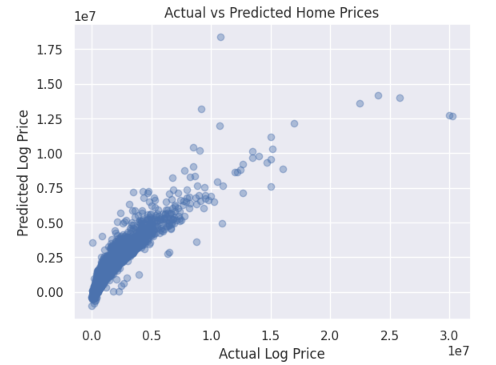
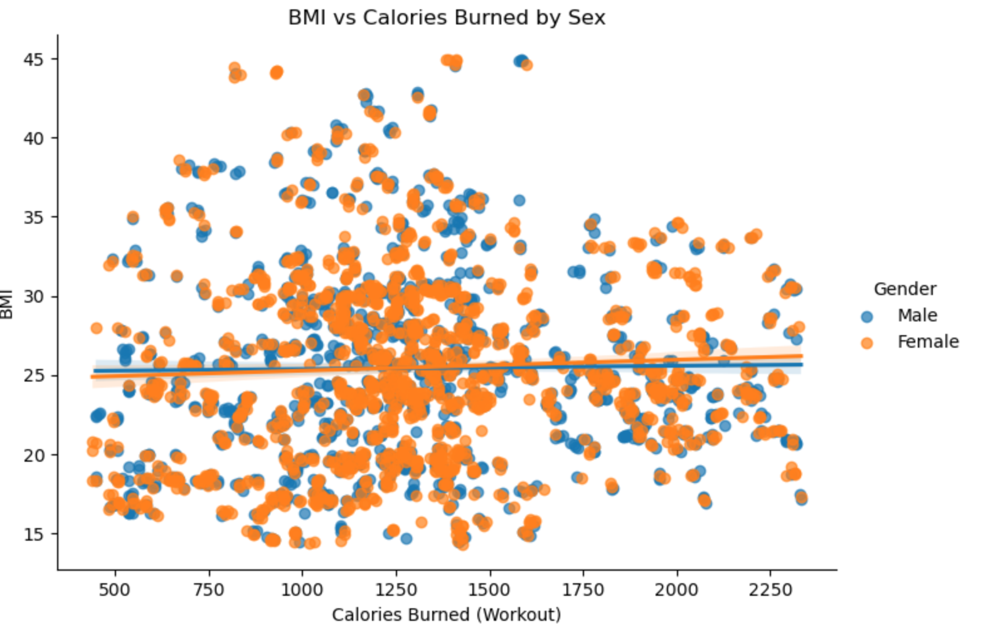
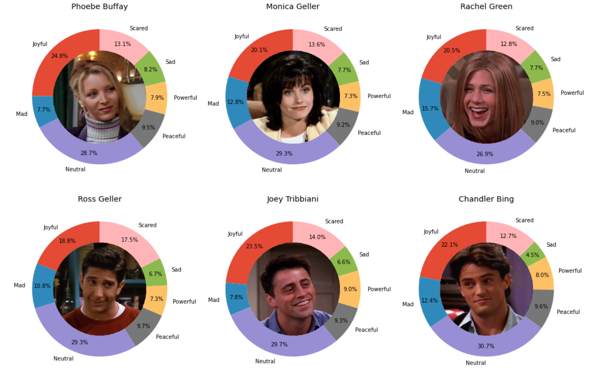

Here are some projects I’ve worked on while studying data science.
They explore housing prices, health data, and television dialogue
through data cleaning, visualization, and modeling.

California Real Estate Market Analysis
An analysis of California residential real estate data,
exploring property features, pricing patterns, and
house price prediction.
Background & Motivation
Housing prices vary widely across California. This project
explores how location and property characteristics relate
to those differences.
Data & Methods
- Cleaned and prepared 178,925 property records.
- Explored price distributions and relationships between features.
- Used one-hot encoding and feature scaling to prepare model inputs.
- Trained and evaluated a linear regression model using an 80/20 split.
Results & Takeaways
- The linear regression model achieved an R² of 0.77.
- Residual analysis showed greater error variation for higher-priced homes.
- The project helped me practice data preparation, model evaluation, and communicating results.
Tools:
Python, Pandas, NumPy, Matplotlib, Seaborn, Scikit-learn
View on GitHub →

Sex Differences in Obesity Predictors
A health data analysis exploring BMI, calorie expenditure,
and activity patterns across sex groups.
Background & Motivation
This project examines how health and activity measures
relate to BMI, and whether those relationships differ
across the groups represented in the dataset.
Data & Methods
- Cleaned and organized health and activity data.
- Performed exploratory analysis using Pandas and Seaborn.
- Compared BMI, calorie expenditure, and activity measures by sex.
- Created visualizations to explore patterns in the data.
Questions Explored
- How do BMI and calorie expenditure vary across sex groups?
- How strongly are workout calories associated with BMI?
- Which other measures might help explain differences in BMI?
Tools:
Python, Pandas, Seaborn, Data Visualization,
Exploratory Data Analysis
View on GitHub →

Friends TV Show Dialogue & Sentiment Analysis
A project exploring character dialogue and emotional
patterns in the television series Friends.
Background & Motivation
Dialogue data offers a way to explore how characters
contribute to a story. This project uses the show's
transcripts to examine character representation and
sentiment patterns.
Data & Methods
- Processed and organized dialogue transcripts.
- Analyzed dialogue frequency across characters.
- Explored sentiment patterns across episodes.
- Created visualizations using Pandas and Seaborn.
Questions Explored
- How is dialogue distributed across the main characters?
- How do sentiment patterns change across episodes?
- What can dialogue frequency tell us about character representation?
Tools:
Python, Pandas, Seaborn, Text Analysis,
Sentiment Analysis, Data Visualization
View on GitHub →